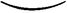
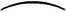

HOW TO PRODUCE ARTICLES FROM THE WAND-ARTICLES PRODUCED FROM THE PERSONS OF THE COMPANY—VANISHING OBJECTS FROM THE HANDS—EXCHANGING ARTICLES—MESMERISING A DOVE—MARKING A CARD IN COURSE OF PERFORMING—PASSING HANDKERCHIEF OVER FLAME OF CANDLE—THE CONJUROR’S SHUFFLE—THE DEVIL’S HANDKERCHIEF—COIN HANDKERCHIEF—FLYING RING—MAGICIAN’S EGGS—PRODUCTIVE EGGS—COIN-VANISHING TUMBLER—MAGIC PLATEAU.
Sleights.—Often, in the description of a trick, the learner is told that a handkerchief, coin, egg, orange, or other article has to be made to disappear or appear by sleight of hand. In the descriptions here given, my own methods naturally appear in preponderance over those of others; but it is a mistake for conjurors to confine themselves arbitrarily to any such, whosesoever they be, or whatever their nature. The peculiar means for magically vanishing or producing an article which has seemed to me to be most convenient under the conditions governing the particular trick under notice, I have always laid the most stress upon; but it is very likely that, were half a dozen experts to write upon the same tricks, they would each vary more or less in the precise means by which the same results were arrived at. This is only as it should be, the success of a conjuror, like that of an actor, depending, in a very great measure, upon his originality or individuality. The reader will notice that I frequently describe a trick, and then give one or more alternative ways of doing it, the last-named being usually methods I have seen adopted with success by other conjurors. In order to save endless repetition, I give here a few sleights which the learner should be incessantly practising, just as he would the pass or the palm. Some of the feats actually form small tricks in themselves, but are only introduced by the performer as suddenly inspired interpolations in the course of a trick, of which they may, as a fact, really form part. For the disappearance of a coin or coins, the various palms provide; the method described in connection with the cups and balls (page 55) suffices for the evanishment of marbles, nuts, and articles of that size; whilst the palming of cards has been specially treated. The other sleights which I have found most necessary are as follows:
To Produce an Egg, Orange, &c., from the Wand.—This daring feat is certainly one of the most wonder-inspiring description. The performer says, “I now require, for my trick, an egg. I presume none of the company happen to have such an article about them; and, as I have forgotten to provide it myself, I must make an appeal to my wand, which rarely fails me in such cases.” Standing sideways to the audience, the performer holds his wand in the fingers, at arm’s length, and then, suddenly running his hand along it, upwards, as though squeezing it, he produces, from the very top, the egg. As his sleeves are turned well up, and nothing has been visible in either hand, the mysterious appearance of the required article is quite inexplicable. It is thus managed. The egg may be either upon the shelf at the back of the table, or under the vest band. I prefer the latter place of concealment, because the performer is better able to carelessly show his hands quite empty just previous to the production of the article; whilst a longer time must elapse between the secretion of the article in the hand and the moment of its appearance on the top of the wand, if it be placed upon the shelf. Apart from this, going behind the table should always be avoided where possible. It is the easiest thing in the world to get down the article from the vest in the act of turning round. It should find its way at once to the very centre of the hand, the root of the thumb gripping it, and the fingers should either seize the coat flap, or the wand should be put into it. The modus operandi may be simply described as follows: The wand is lying upon the table and the performer comes ‘forward, showing, by rubbing them together in the act of speaking, that his hands are empty. When he has uttered the words “in such cases,” he wheels round to the left, for the purpose of fetching the wand from the table, and when his back is fairly towards the audience, he gets down the egg in the right hand, which then seizes the coat flap. A very important matter must here be observed. The article vested must always be placed on that side of the body which is opposite to the hand that is to bring it down. If, in the present instance, the egg were upon the right side of the performer’s body, taking his vest buttons as a central line, the act of getting it into the right hand could not be achieved without sticking out the elbow, which would at once reveal to the company that the performer was carrying out some manoeuvre with that hand, and, when he turned round, they would immediately fix their eyes upon it, and keep them there, to the serious detraction of the proceedings following. The golden rule must be followed of glueing, as it were, the upper arm and elbow to the side. Then the forearm and hand may do as they please, with impunity. The getting down of an article from the vest need occupy only a half-second of time, so the performer turns briskly to the table, his every visible action and look being, of course, concentrated upon the matter in hand—the fetching the wand from the table. With the right hand, containing the egg, holding the coat flap lightly and naturally, the wand is picked off the table with the left, the performer’s right side being towards the company. Holding the wand for a few moments in the left hand, and looking at it amusingly, as though wondering quite as much as the company how it is going to accomplish its task, the right hand is brought boldly to the front, and the wand placed in the fingers. The back of the hand is, of course, towards the company. The fact of its containing a bulky article will naturally cause it to be somewhat curved, so it is necessary to cause it to look as flat as possible. This is best managed by straightening the fingers and bending the wrist outwards, the whole length of the fingers being thus presented to the view of the company. It will be found that the wand, pressing against the article in the hand, assists towards keeping it in its place there. In the case of an egg, care must be taken not to put on too much pressure. The wand must be held by its middle portion, and should not remain in the right hand for more than a couple of seconds, at the outside. It is then re-taken by the left hand, but by the lower end, the right hand simultaneously making the upward “squeeze ;” the article being produced at the tips of the fingers, when they reach the top of the wand, it being allowed to drop from the palm into the bent fingers just previously. The illusion is complete when the sleight is performed with neatness and dash, the article appearing to actually come out of the wand, although everyone knows how impossible it is for it ever to have been there. An article so mysteriously produced should, by all means, be given for examination. It is surprising what very large-sized oranges can be produced by this means, when the performer has once acquired sufficient boldness. Audacity is the chief ingredient in the sleight, and the learner will acquire it by beginning with small-sized articles. Brilliantly-coloured articles, such as oranges, or perfectly white ones, as eggs, make the best appearance.
To Produce Articles from the Persons of the Company.—Here audacity plays a very important part indeed, as the performer goes in amongst the spectators and finds such oranges, eggs, lemons, &c., as he may want, in their hair and apparel. In the Gant de Paris (page 228), I have seen a performer use an orange, a lemon, an egg, and a walnut, all of which he has found upon the company within a very few seconds of time. A description of how this is done will suffice as a guide to the learner how to proceed in all similar cases. The walnut should be palmed, and the lemon held in the same hand, the other hand holding the orange, both hands of course seizing the coat. The egg is vested. Coming on to the stage from behind, the performer proceeds rapidly into the very midst of the company, and says, “Can any one lend me a kid glove for a few minutes ?” then, turning suddenly towards a male spectator—with long hair, if such a one be handy—“I I beg your pardon, sir, but I see a something in your hair; what is it P” Whilst this is being said, a rapid dash is made at the addressee’s hair, the orange being slid to the ends of the fingers, and produced with all slowness. It is given a second spectator to examine, who is discovered to have a lemon in his hair, or inside his coat. Whilst the lemon is being produced, and all eyes are intent upon it, the empty hand gets down the egg. This is found in the hair of a third person, whilst the walnut is discovered on the tip of the nose of a fourth. When the performer afterwards collects all four articles into his hands, it will never occur to the company that so much bulk could have been deliberately palmed by him in their very midst. As a matter of fact, it is easier to do these sort of things in the midst of a numerous and rather closely-packed company, than in the presence of a meagre and widespread one, and the performer should always go where the spectators are thickest.
How to Cause Large-sized Objects to Appear to Vanish from the Hands.—By large objects are meant eggs, oranges, ladies’ handkerchiefs, gloves, small birds, &c. The sleight-of-hand conjuror should embrace every opportunity for a display of his skill, handkerchiefs being swallowed and reproduced elsewhere, and other articles thrown away or made to pass imperceptibly from out of the hand into thin air, nothing being left of them when the hand is opened. In order to bring about these things, all that the conjuror has to do is to adapt, to the altered circumstance of having larger articles to deal with, what he has been taught in connection with the palming and passing of coins. Take, first, the apparent placing of an article in the mouth, and swallowing it. The method adopted will vary, according to the size of the article. If it be a comparatively small one, such as a walnut, then the action depicted at Fig. 7 must be followed, the article being palmed in the right hand, the back of which must necessarily be turned towards the audience more than is shown in the sketch, by reason of the more bulky nature of its contents, and the fingers of the left hand rounded in a way suggestive of containing the article supposed to be put into them. The right hand then takes the wand, which, in these cases, must always be carried under the right armpit. Should the article not be swallowed, the wand strikes the closed fingers of the left hand, which are simultaneously opened and shown to be empty. The success attending this method will depend solely and entirely upon the neatness with which the palm is executed, and the article apparently placed in the left hand. It must not be ostensibly thrown there, as is the case with a coin, but deliberately put in, the fingers of the right hand, after the execution of the palm, forming as though they actually held the article, those of the left hand closing around them, as if taking it firmly in charge. It is always as well to actually place the article in the left hand at least once, thereby silently impressing the company with what is to be done with it. The palming of a walnut is quite as easy as that of a coin, and the pass must be regarded as a very simple one to learn.
Eggs, oranges, lemons, and solid articles of that size, must be treated according to the action shown at Figs. 8 and 9, facility in executing which will render the accomplishment of what is now described very easy. As the article is not a coin, it must not be held between finger and thumb, but made to rest upon the very tips of the fingers of the left hand, which is held perpendicularly for the purpose. It is thus very conspicuously in sight of everyone. It is allowed to rest there for a few seconds, when the right hand is rought suddenly in front of it, and the action gone through of taking it. At this instant, the orange (say) falls into the hollow of the left hand, which is immediately dropped to grasp the coat flap, whilst the right hand apparently puts the orange into the mouth, a muffled noise being made indicative of the mouth being full. Before the hand is removed, the mouth is closed, when it is as well to bulge one of the cheeks out with the tongue, and then make three or four desperate attempts (ultimately successful) at swallowing, accompanied by choking sounds. A smile should then illumine the face of the performer, who appears to have enjoyed the operation, and the orange, if it is wanted again, may be produced at the right elbow, or brought round from the back of the neck, rolled along by the tips of the fingers. A very effective sleight with which to quickly follow the foregoing is as follows: Place the wand under the left armpit, and hold the orange in the fingers of the left hand, as above described. Open the legs slightly, and then apparently take the orange in the right hand and smash it into the right leg, just above the knee. The orange must be apparently vigorously snatched out of the left hand, which at once mechanically finds its way to the wand, that article being grasped by the thumb only, the fingers and palm concealing the orange. The performer allows a second to elapse, and then, briskly taking the wand in the right hand, rolls the orange from behind his left thigh to the front. It does not in the least signify what the company fancy actually happened with the orange, so long as they are not allowed to suspect that it never left the left hand. Obliged to account for the phenomenon, the theories formed will be various, the majority polling for a tubular communication between sleeve and sleeve, viâ the performer’s back. As the orange is apparently smashed into the leg, the performer will find it necessary to stoop slightly. This sleight should follow the preceding one before the spectators have begun to recover from their wonderment at seeing the orange apparently swallowed and then reproduced. A cigar, or article of the like shape, can be similarly treated if it be held in the left hand between the tips of the middle finger and thumb, the broad end being against the thumb. As the right hand covers it, in the act of apparently taking it, the broad end is allowed to fall against the root of the thumb, and the hand turned slightly over and then allowed to hang down at the side. A very little pressure on the part of the middle finger will suffice to keep the cigar in position. The right hand must conform itself as closely as possible to the shape it would assume if it actually contained a cigar. This sleight will come in handy in conjuring at table.
A more complete method of vanishing is as follows: Take the article in the right hand, and hold the waistband of the vest by the left. Toss the orange, &c., twice or thrice in the air, and then whip it swiftly beneath the vest, which will be partly raised by the left hand. The two hands thus brought together should be closed one over the other, as if they contained something, which something you will then proceed to gradually rub away. As you have nothing whatever in the hands, you will be able to execute this portion of the deception with great confidence and ease. When you slip any article beneath the vest, the body should be partially turned from the audience. Quickly done, the movement will never be noticed, and it is one of the most perfect deceptions practised. The vest is never thought of by an audience as being a place for the concealment of articles, and so it escapes notice, and everyone wonders where the vanished article can have gone to. The vest is also an excellent place in which to carry such things as eggs, lemons, &c., which may be required during any trick.
To Change an Article.—This is executed very much after the manner of the preceding, ‘with this exception: the left hand contains the article concealed, which is to be exchanged for whatever is held in the right. Say, for example, that the right hand holds an orange, which the audience, of course, examines. The left hand conceals, say, an apple. The orange is vested in the orthodox manner, and the hands brought together as directed, but this time they contain the apple. Rub them a little, and exhibit the apple, which can be brought back to its original shape—an orange—if the performer pleases. On no account must the conjuror inform the audience what he is about to do, or he may find the ideas of the spectators anticipate his actions, which is, to say the least, awkward. These actions of vanishing or exchanging can be done when one is actually surrounded by people; but the hands must be quick and must appear natural: for instance, when supposed to contain an orange they must not be compressed so as to barely leave space within them for a walnut. Nothing but careful practice will ensure a satisfactory result, for the least bungling will lead to detection. I need hardly say that it enhances one’s reputation greatly if one can be said to have “ changed a real orange into a real apple under our very eyes ” without the aid of any gaudy boxes or canisters. By all means allow the orange to be squeezed and the apple to be eaten.
To Vanish Handkerchiefs.—Not being solid bodies, handkerchiefs will require different treatment, and present the greatest difficulties, which are fully compensated for by the superior effects produced. In the first place, the performer must be careful to borrow a lady’s small handkerchief, if for the purpose of vanishing. In performing The Knots (page 218) a small handkerchief is generally included amongst those borrowed. It is not used for the trick; but the performer says he is very fond of such handkerchiefs, and forthwith rolls it up in his hands, pops it into his mouth, and swallows it. Whilst the company are wondering, he suddenly pulls the handkerchief out of his leg. This is a most wonderful sleight, and one the conjuror must endeavour to become perfect in. He should begin with a small piece of muslin, which rolls up very tight and easily. This he takes between the two hands, the left hand below, with its back turned somewhat towards the company, and rolls it sharply round and round, until he feels that it is well balled. Then, with the right hand, he apparently takes it up, the left hand really retaining it by means of the thumb, and grasping the coat-flap, as in other cases, or the wand under left armpit. The right hand apparently conveys the handkerchief to the mouth, where the choking and swallowing performance is gone through. After a pause of a couple of seconds, the conjuror looks curiously down at his leg, and, pouncing at a spot in the rear of the thigh, just above the knee - joint, presses the handkerchief there, to enable the fingers to obtain a hold of a very small portion of it. It is then at once jerked forcibly away, when it will appear to the spectators precisely as though it had been pulled out through the cloth. The different movements must all follow one another with regularity and swiftness, and yet the performer must not appear to be hurrying himself in the least. If the handkerchief experimented upon be large, some risk is run of a portion appearing from the left hand. Even with small handkerchiefs this will, at times, occur; but if the performer carries out the movements of the right hand properly, the eyes of the company will be directed solely to that.
The same sleight is employed in feigning to throw back a handkerchief to its owner, the action of throwing being employed instead of affecting to place the article in the mouth. In this case, it is as well to pivot round at once, vesting the handkerchief in so doing, and then at once inquiring, with empty hands, if the handkerchief arrived at its destination all right. It may be afterwards produced from the interior- of a spectator’s coat, by being whipped quickly in and then produced very slowly and at extended length. If this reproduction is to follow quickly, then do not vest, which is only done for the purpose of showing the hands empty. If the performer pleases, he may plunge his hand into his breast, and produce the handkerchief ; but it will cause less wonderment, and no amusement at all.
Small birds present considerable difficulty, the object being to conjure with the bird without injuring it. A bird cannot be palmed, like a walnut, nor can it be rolled up, like a handkerchief. But, strange to say, the very difficulty of the feat assists the performer. In the first place, the company never suspect that the bird is about to be made to disappear, unless the performer is weak enough to forewarn them; and, secondly, never having experimented, they do not suppose for an instant that the bird will be simply retained in the hand all the time, as it really is. All the conjuror has to do is to hold the bird in the right hand, outside the wings, and head downwards, the tail pointing up the wrist, and then affect to put it in the left hand, which is bulged so as to appear to hold it. The wand must be under the right armpit, and the right hand seizes it at once, the left hand being struck and opened, showing the bird to be flown. The sooner the bird is reproduced the better. The most unlikely, and therefore the best, place to produce it from is the bottom of the trouser—a lively course of speculation as to how it got there being thrown open to the company. If it be desired to get rid of the bird altogether, the performer must pivot round and vest. There is not much chance of the bird moving in that position, but, of course, it will be better for the performer to make an early exit, and relieve himself of the encumbrance.
Doves are made to disappear by means of the shelf at the back of the table, or the pocket directed to be made at the bottom of the coat-tail. The shelf vanish is more open to suspicion, but I have, nevertheless, found it enormously successful, when properly managed. The performer, in the first instance, must not announce, by word or deed, that the disappearance is about to take place. Standing to the left (his left, facing the audience) of the table, and slightly to the rear of it, he takes the dove in the right hand. Walking briskly past the table, at the back, he casts his eyes upwards, and just as he reaches the extreme corner of the table, makes a movement of tossing the bird into the air. It is, instead, placed gently (not dropped, or thrown) upon the end of the shelf, the brisk pace of the performer carrying him at once a good yard beyond the table, from which spot the dove is apparently cast into the air. The success of the sleight depends very much upon the exactness with which the performer imitates the actual throwing of a bird into the air, and the fearlessness with which it is conducted. Any symptom of a glance at the shelf would be fatal. The bearings must be taken whilst stationary, and the rest carried out with the eyes fixed earnestly on the ceiling. Rabbits and guinea pigs may be similarly treated; but large-sized rabbits are unsuited, since it is not easy to place them upon the shelf. When the pocket is used, supposing it to be in the right coat-tail, as it probably would be, the performer should stand with that side away from the audience, and ascertain, by means of the right hand, if the mouth of the pocket be open. Lean slightly over to the right, and then, taking the dove in the right hand, make a movement of casting it into the air, straight upwards, whither the eyes are directed. It is, of course, left in the pocket, head downwards. An attempt to place it there tail first would be likely to lead to disaster. As this sleight may be performed away from any table or chair, it is, of course, to be preferred. It is, undoubtedly, more difficult of accomplishment than the shelf vanish, requiring more neatness in depositing the bird; for, if the downward sweep be too vigorous, it will have the effect of disturbing the coat-tail, which will be momentarily seen, pushed out behind the performer, by the company, and the place of concealment thereby betrayed. It need hardly be pointed out that, in either case, the hand must grasp the bird firmly by the body, clasping the wings tightly down. If it be felt struggling in the pocket, the performer should bow himself off at once.
Mesmerising a Dove.—The apparent mesmerising of a dove makes, of itself, a capital effect, leading the audience to pay high respect to the necromantic powers of the conjuror. Also, it makes an admirable introduction to the vanish. The bird is taken in the right hand, outside the wings, and laid upon its back on the front edge of the table, so that the head just projects over. The beak is now taken in the left hand and the head turned backwards, as far as it will go. When held in that position for a few moments, the hands may be removed, when the bird will lie perfectly still. It will not always do this at the first, or even the second, attempt, but perseverance will always be rewarded with success. The performer must be as gentle as possible, and go slowly to work. We need not stay to discuss the reason for the singular phenomenon, it being sufficient for our purpose to know that the bird will lie still when placed in the proper position. The performer waves his hands over the bird, as though mesmerising it, and then he may take one of the feet in his fingers and actually raise the bird, by one of its legs, completely off the table. This will require the greatest delicacy and patience to accomplish, operations being discontinued the instant the bird shows any signs of fluttering. Anything approaching a jerk will rouse the bird, so the lift must be made as gradual and as imperceptible as possible. The reader will, doubtless, be able to appreciate the sensation that will be caused when, the mesmerising accomplished, the bird immediately afterwards vanishes from sight, no one knows whither.
To Exchange Borrowed Rings for Dummies.—With a single ring, and in a small way, this may be done by means of the finger palm (Fig. 3), the dummy being already held in the left hand, between the roots of the fingers, and a feint made of placing the borrowed one into it. (See “ Tricks with Coins,” b, p. 11). This does very well for the drawing-room, in which domain the following method may also be adopted when two or more rings are borrowed. Have the dummies screwed up in a piece of paper, which hold in the left hand, and cover with a precisely similar piece of paper, open. Into this latter place the borrowed rings, and screw up. All that is now necessary is to reverse the positions of the two parcels, the left hand carrying away the borrowed rings, the right taking the dummy ones, the paper containing which is, of course, not opened again during the trick. The same method should be adopted with large audiences when a borrowed watch and chain have to be exchanged; but the following method is far away the best to adopt on the stage with rings.
For the purpose of collecting rings borrowed from the audience, the conjuror should provide himself with an ebony wand, rather thicker than an ordinary penholder, and about eight inches in length. If he be performing with an assistant, that person should do the collecting. Upon the wand are already placed the dummies, covered by the hand holding it by one of its ends. The wand is presented the persons lending the rings, who slide them on. The performer remains well up the stage, and, the assistant, turning towards him, changes the wand from one hand to the other, securing the borrowed rings under the latter, and spreading the dummies along the wand. This can be quickly effected, and the assistant at once turns round facing the company, presenting the wand, with dummy rings, to the performer, who takes it; the borrowed rings remaining in the assistant’s hand, dropped at once to his side. The performer at once draws attention to himself, and the assistant makes off with the rings for whatever purpose may have been previously arranged. An assistant must be something of a conjuror to possess the necessary sang froid for effecting the exchange without drawing attention to his movements, so the performer may have to execute it himself, in which case he would place the dummy rings in some conspicuous position, and pass behind the scenes momentarily on the strength of some plea, which would suggest itself according to the trick in course of performance.
How to Show the Hands Empty whilst still containing Coins.— In many tricks with money (“Hold them Tight! ” for instance) it may be advisable, or even compulsory, by reason of the doubt of a spectator, to show that the coins are not in the hand, whilst they really are so. With a single coin to manage, the reverse palm will suffice. When two or more are in the hand the coins must be slid inside the doubled up fingers which hold the wand, placed across the hand. The really empty hand is opened, and the one containing the coins also, as far as the performer dare. Now, if he held the fingers doubled up without the wand in the hand, the spectators would know where the coins were; but, seeing the wand, the partial closing of the hand seems natural enough. Of course the hands are boldly thrust out, the performer saying the while, “It is pretty plain that I haven’t the coins, for here are my two hands both wide open. Now sir, what have you done with them?” &c. Unblushing audacity is again the order of the day. A capital effect is made if, after showing the hands apparently empty, the coins are abstracted from the hair or beard of a spectator. One never knows when such a sleight may be wanted. When it is, it is as well to know what to do, so as. to prevent exposure.
To Mark ,a Card, in the Course of Performing, so as to be able to Recognise it again.—This is a very useful little dodge, as by its means the machinations of the obnoxious person in this book denominated Mr. Interference may be defeated. It is only requisite when it becomes absolutely necessary to convince the company that you do not know the position of the card in the pack. It is necessary to get at least a portion of the card in the hand, when, from the upper side, an indentation is made in the card with the thumb nail, one of the fingers, on the under side, performing the office of pressure pad. The card need not be removed from the hand of the chooser, the performer merely touching it momentarily whilst explaining what he wishes done. It is as well to make the mark near the centre of the card, as then it is more easily found. After it has been made, the pack may be given the company, the card placed in it, and the whole well shuffled by anyone. The card will at once be recognised by the slight projection that has been made on the under side. Should a repetition of the ruse become necessary, the performer must either leave the card originally marked out of the pack, or else make two marks on the next; but it is better to leave the first one out. As the whole of the pack is not used—at least, not under my instructions—some spare cards are always lying unused upon the table. This spare heap is always exceedingly useful, as cards such as the one under notice may be placed in it, whilst others, which may be presently wanted, can lie upon the top, ready at hand.
To Pass a Handkerchief over the Flame of a Candle without Burning it.—This is a remarkable effect, which only requires confidence to ensure its successful execution. The performer has a lighted candle standing upon the table, and when in possession of a borrowed handkerchief for a trick, he introduces the sleight as an interlude. Grasping the handkerchief by one corner, in such a way as to spread it somewhat with the fingers, he holds it in front of the candle, and then draws it upwards and backwards, right over the flame, almost extinguishing the latter in so doing. The handkerchief should be an ordinary white one, and the flame will be seen by the spectators to be eating into it, apparently. There is not the least necessity to be in any hurry, the action of drawing the handkerchief over the flame being a steady and deliberate one. It may be repeated as often as the performer chooses, but not made anything of by him, the impression to be conveyed being that the power of placing a handkerchief in the flame of a candle without injuring it is one necessarily possessed by him, as a matter of course. This sleight will come in particularly à propos if it precedes a trick in which a handkerchief is burned. It is not advisable to try the feat with a scented handkerchief, it being just possible that the spirit contained in the perfume might ignite.
The Conjuror’s “Shuffle.”—Nearly all good conjurors preface their card tricks with an exhibition of shuffling, a process always conducted in the showiest manner possible, although, by the time it is completed, it is possible that the position of the cards has not been interfered with in the least. As the term “ shufliing ” is only employed for want of a better one, and it is merely a question of exhibiting skill, this does not signify. When a conjuror wishes to shuffle the cards, he adopts the specious method generally in use—if he can. According to whether he be a genuine adept, or only a performer of an inferior order, so will the phenomena exhibited to the spectator in this connection vary. In the one case, the performer, holding the cards in the two hands, suddenly opens them very wide apart, the cards spreading, after the manner of a comet’s tail, from one hand to the other. For an instant they form an aerial arc, when, before they can fall to the ground, the hands are brought smartly together, collecting the cards by the action. This movement is repeated twice or thrice. This is what the genuine man does. The impostor ostensibly does a very great deal more, for he begins by parting and bringing the hands together again, as one does in playing the concertina, several times, the cards acting the part of the concertina perfectly. He then tosses the cards about from hand to hand in the most nonchalant manner, the cards invariably following one another in an unbroken stream which assumes serpentine and other shapes, at the will of the performer. They are spread along the conjuror’s arms, and over his chest, and are invariably gathered in again without a single one being allowed to fall. The feats performed appear to be nothing short of marvellous, until one becomes possessed of the interesting fact that the cards are all sewn together, so that the whole thing is merely child’s play. Now, although I have seen conjurors with good reputations using these prepared cards, I entirely disagree with their use myself. In order to deceive the public, one must not be particular about the means employed; but here it is a question of one conjuror setting up to be vastly superior to others, the facts of the case being precisely the other way. As a matter of fact, these prepared cards are only used when the performer is so wanting in skill that he cannot execute the genuine shuffle. Looking, as I do, upon the use of these cards as being unworthy anyone but a music-hall performer, I never hesitate to expose the fraud whenever it is perpetrated. I shall, of course, describe nothing in connection with it, but pass on to the genuine article, which may be at once recognised by the noise accompanying its execution, the fraudulent method being quite noiseless. As the feat is really difficult of accomplishment, its study must be conducted by easy stages. The pack, which should be composed of small cards (the large English ones being very unsuitable), thirty or so in number, is held lengthwise in the right hand (Jeft hand if the performer is very decidedly left-handed) by the thumb at one end, and the first, second, and third fingers at the other end, the body of the hand making an arch over the cards. The left hand is held out, a little lower than the elbow, in front of the body, with the fingers spread out, and slightly curled upwards, the first finger a great deal more than the rest. Now, if the cards be squeezed by the fingers and thumb of the right hand, they will bend thus, ; but if, just as the pressure is put on, the fore finger of the left hand pushes the centre of the pack from below, the opposite curve will be taken, thus, , which is the one wanted. With the cards thus bent, they must be held over the left hand, and more pressure then applied, when they will “squirt” into the left hand, their foremost ends striking against the up curled forefinger, and so being prevented from falling to the floor. In making the squeeze, it will be found that the middle and third fingers use more influence than does the first finger, which is merely an auxiliary at the commencement. The greatest power of all must be exerted by the thumb, which is always pushing the cards forwards with considerable force. The learner must content himself with merely “squirting” the cards from the right hand into the left, at a distance of two or three inches only. When he can do this easily and smoothly, and without dropping any on the floor, he may increase the distance to six or eight inches. This is about the greatest distance he will be able to attain by simple “ squirting.” In order to make a more effective show, he will have to give to the right hand an upward movement at the moment the cards are pouring from it. This will tend to increase the distance between each card, but as, at the same time, it kills the forward momentum, the cards would simply fall to the ground were they not prevented from so doing. To accomplish this, the left hand must follow them up quickly. For an instant of time they will poise in the air, and then commence to fall; but, at that moment, the left hand comes upward with a rapid sweep, bringing the cards together against the right hand. By not attempting too great a distance at first, the learner will progress more rapidly ; and he should not be satisfied until he can compass a distance of two feet. Great experts can accomplish very much more than this. As proficiency is attained, the “shuffle” should be made more across the body, the direction being from the left hip towards the right shoulder, this being more showy. A very difficult, but highly effective, method is to make the “shuffled” the reverse way, i.e., downwards. The left hand is held nearly shoulder high and the cards “squirted” into it, the right hand sweeping downwards in the direction of the right hip. The performer must always direct his practice towards making the cards remain as long in the air as possible. To this end, the movement of the right hand must be exceedingly rapid, so that all the cards are visible to the spectators at once; and the longer the left hand dallies, the more rapid must be its motion towards the right hand. It must be distinctly understood that the two hands do not move simultaneously, there being two decided movements, one following the other. Old cards are useless for this feat, as they come off in batches, and have no spring. American cards are trifle too thin, and are only good when new, whilst the regulation English whist card is too thick; therefore a medium thickness must be chosen. The finest quality cards will be found the cheapest to use, as they stand the strain better Inferior cards soon become demoralised by the rough treatment to which the “ shuffle ” subjects them. After using a pack faces downwards for some time, turn it over, and use with the faces upwards, changing back again when the spring of the cards becomes weak.
PROPERTIES.—Besides the auxiliary articles mentioned in connection with various tricks, there are some that are of general application which the conjuror should always have in readiness. They are here enumerated and described:
The Devil’s Handkerchief.—The peculiar use of this article is that anything wrapped in it is made to disappear when the performer desires, by simply shaking out the handkerchief. The secret lies in the fact that there are two handkerchiefs, three of the four sides of which are sewn together, the fourth being left open, so as to form a bag. The article to be made to disappear is apparently placed under the handkerchief, but really into the bag, and it is usual to give this to be held by one of the spectators. Later on, the performer takes the two upper corners of the handkerchief, and, asking the spectator to loosen his hold, gives it a vigorous shake. ‘The company look in the air, or upon the floor, expecting to see the object there, but of course it is at the bottom of the bag. Cards are successfully vanished in this manner, as also watches eggs, and articles not more bulky than they. The handkerchiefs should be of a sombre colour, and have a decided pattern. This will tend to conceal the contour of the article inside the handkerchief after it has been made to disappear, although the performer invariably retires with it to the stage, out of harm’s way. Some performers use handkerchiefs sewn up on all four sides, and having merely a slit, from four to six inches long, made in one handkerchief.
The Coin -Handkerchief.—This is an ordinary coloured handkerchief, into one corner of which, by means of a small extra piece of stuff, is sewn a piece of metal (to avoid unnecessary sinking of capital) resembling a coin. The performer should have on hand three handkerchiefs prepared with pieces of metal to represent sixpences, shillings, and half-crowns. For the latter, a penny will do admirably, and it will also act for florins and pennies, the public not being able to appreciate the slight difference in size when felt or seen through the folds of a handkerchief. The shilling handkerchief will answer admirably for halfpennies. A borrowed coin is apparently folded in the handkerchief, which the performer has drawn carelessly from his pocket, and not had lying in state upon a table, but palmed instead, the dummy being presented in its place. and given to be held. The palmed coin is then secreted in the place to which it is presently to be magically transported. To cause the coin, supposed to be wrapped in the handkerchief, to disappear, the performer shakes it by one or two corners, as in the case of the Devil’s Handkerchief. Each of the three prepared handkerchiefs should be of the same pattern, so that, if more than one are used on the same evening, no remark will be excited as to the appearance of a new property upon the scene.
The Flying Ring.—This is a dummy ring, attached to a piece of elastic passing up the sleeve, with the other end fastened to the brace, or elsewhere. On a ring being borrowed, it is apparently placed in a handkerchief, the Flying Ring being substituted, and held by a spectator, of course through the handkerchief. At a given signal the ring is released and at once disappears up the performer’s sleeve.
Magician’s Eggs.—These are merely blown eggs, which should always be used when the employment of solid ones is not imperatively necessary. Their lightness enables the performer to palm them with considerable ease, and the same peculiarity renders them less liable to break; and, when they do, by chance, crack, no disconcerting emission of glutinous contents ensues. Besides this, a stock can always be kept on hand ready for any performance, which cannot be done with real eggs. Imitation eggs are made in indiarubber. These are of everlasting wear, bodily, but the exterior paint wants renewing occasionally, in order to maintain the resemblance to the real article, at no time any too exact.
Productive Eggs.—These are blown eggs containing lengthy slips of coloured paper, ‘rolled up tightly. The introduction of the paper is thus managed. The egg blown and dried, a slit is made along one side with a piercing saw or fine file. A wire is then passed longitudinally through both thick and thin ends, one end of the paper inserted through the slit, and rolled up by means of the wire, twisted from the outside, until the egg is full. A piece of cotton is attached to the loose end of the paper, and the slit and holes in the ends of the egg closed up with plaster of Paris. At the conclusion of any trick in which real eggs have been used, one can be exchanged for a prepared egg, which is then broken, and the paper extracted, the piece of cotton at once showing where the ‘loose end is to be found. Into a good-sized egg some fifty or sixty feet of paper may be secreted. The paper may be purchased at conjuring shops in large rolls; and the conjuror will find it better to prepare a quantity of eggs at a time.
The Coin-vanishing Tumbler.—This is an ordinary tumbler, with a horizontal slit at the side, on a level with the interior bottom, large enough to allow of the passage of a half-crown. If the tumbler be held in such a manner that a finger closes the slit, liquid may be poured into it. This should be done casually, and not professedly for the purpose of showing that there is nothing peculiar about the tumbler, such a suggestion being unnecessary and dangerous. The company would naturally say, “ If there be really nothing wrong with it, why does he not place it in our hands for examination ?” A coin placed in the tumbler may be got into the hand at any moment viâ the slit, the top being covered with cards, &c., to prevent the exit of the coin that way : as if coins were in the habit of leaping out of tumblers into which they have been placed, and deceiving audiences ! Nevertheless, an audience is invariably satisfied when inanimate articles are covered up, and so supererogatorily prevented from performing acts which are not possible to them.
The Magic Plateau.—This is a glass plateau, in form like a school slate, there being a broad fancy wood border, glass taking the place of the slate. The plateau is held like a tray in the hands of the performer, and coins are placed upon it, which disappear when it is waved in the air. The secret lies in the fact that the wooden border is undermined, and, when a sideways movement is given to the plateau, the coins disappear underneath. The plateau is then carried with that side in which the coins are concealed, downwards. It makes a trick of itself, but is more useful as an adjunct to other tricks. As it is advisable to have a very narrow frame, shillings should be used: in no case coins larger than a florin. The plateau is also of great use when the performer is desirous of changing several borrowed and marked coins for some of his own. Taking the plateau, with the marked coins upon it, in the right hand, he pretends to pour them off into the left hand, where the conjuror has his own coins concealed. The marked coins disappear under the frame, and the concealed ones are exhibited. When the reappearance of the coins on the plateau is desired, they may be shaken out of the frame as easily as they were sent there; but I do not advise this addition, as it is very likely to give a clue to the mystery. The article is not difficult of construction, and the fact of the greater part of the material being transparent glass, lends it a desirably innocent appearance.